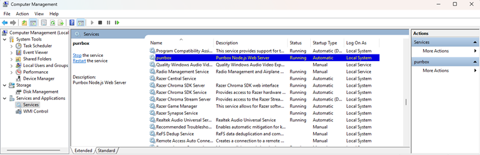
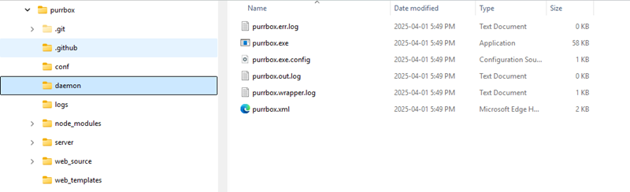

This help tip won't specifically solve all configurations types as OS and settings can vary greatly. This will assume you are familiar with Node.js installation and some other OS functionality. You may choose to start from a start up script, windows scheduled task, Linux cron script, Linux or Windows service, docker container, and Kubernetes. For running as a container (docker or Kubernetes) see the the Advanced Uses section.
Best practices wise, you should not run the node server as root level or Administrator. For this example, we'll use a Windows service and a Linux Ubuntu systemd service.
You can run node from a user account and not from root. At time of writing this help document, the URL 'https://nodejs.org/en/download' has instructions to install Node versions, OS and using various tools. For this example, we've used the 'fnm' tool and installed node under a user account called 'sysadmin'.
Before you can run node as the user, you must allow a user run process to bind to ports under 1024. Do the following to allow this. Get you node path under the user account by the following command.
$ which nodeOutput should show node path /run/user/1000/fnm_multishells/76070_1743465797516/bin/node
Once you have the run path for node, you can elevate to root level permission or run a sudo command. For this example, the sudoer configuration is heavily limited to a few commands and needed to elevate to root to run this.
$ sudo -i [sudo] password for root:
Then run setcap command to allow the node command line to execute and bind to ports under 1024.
# setcap 'cap_net_bind_service=+ep'/run/user/1000/fnm_multishells/76070_1743465797516/bin/node
While you are in an elevated console, create the systemd configuration.
vi /etc/systemd/system/purrbox.service
Create the service configuration. Ensure the path, start command and working directory are defined correctly. For this example, a 'www' folder was created at the root of the filesystem.
[Unit] Description=Node.js Purrbox After=network.target [Service] ExecStart=/run/user/1000/fnm_multishells/76070_1743465797516/bin/node /www/start_server.js Restart=always User=sysadmin Group=sysadmin Environment=PATH=/run/user/1000/fnm_multishells/76070_1743465797516/bin :/home/sysadmin/.local/share/fnm:/usr/local/sbin:/usr/local/bin:/usr/sbin:/usr/bin:/sbin:/bin WorkingDirectory=/www [Install] WantedBy=multi-user.target
Save the configuration file and then reload the systemd daemon to update the configurations.
systemctl daemon-reload
Enable the purrbox service.
systemctl enable purrbox.serviceCreated symlink /etc/systemd/system/multi-user.target.wants/purrbox.service → /etc/systemd/system/purrbox.service.
Start the purrbox service.
systemctl start purrbox.service
Check the service status
systemctl status purrbox.service ● purrbox.service - Node.js Purrbox Loaded: loaded (/etc/systemd/system/purrbox.service; enabled; vendor preset: enabled) Active:active (running) since Wed 2025-04-02 00:30:36 UTC; 6s ago Main PID: 27151 (node) Tasks: 22 (limit: 2181) Memory: 85.8M CPU: 633ms CGroup: /system.slice/purrbox.service ├─27151 /run/user/1000/fnm_multishells/1220_1743464520708/bin/node /www/start_server.js └─27162 /home/sysadmin/.local/share/fnm/node-versions/v22.14.0/installation/bin/node /www/start_server.js Apr 02 00:30:37 purrbox-dev node[27162]: :: [pid:27162] Project configuration mapping and validate time: 3 ms Apr 02 00:30:37 purrbox-dev node[27162]: :: [pid:27162] VHost Worker started Apr 02 00:30:37 purrbox-dev node[27162]: :: [pid:27162] New Configuration @ project[project1] Apr 02 00:30:37 purrbox-dev node[27162]: :: [pid:27162] New Configuration @ project[project2] Apr 02 00:30:37 purrbox-dev node[27162]: :: [pid:27162] Project configuration change detected, update project mapping Apr 02 00:30:37 purrbox-dev node[27162]: :: [pid:27162] Project configuration mapping and validate time: 0 ms Apr 02 00:30:37 purrbox-dev node[27162]: :: [pid:27162] Starting Node.js (virtual hosts server) Apr 02 00:30:37 purrbox-dev node[27162]: :: [pid:27162] HTTP server - port 80 Apr 02 00:30:37 purrbox-dev node[27162]: :: [pid:27162] HTTP server - port 443
Beyond this, you can modify your server configuration and restart server as needed.
Remove Service
Stop the service.
systemctl stop purrbox.service
Disable the service.
systemctl disable purrbox.serviceRemoved /etc/systemd/system/multi-user.target.wants/purrbox.service.
Node has a windows service installer for setting up as a windows running service. First you will need to run the command prompt as administrator to make sure there are no issues with permissions. Then install the 'qckwinsvc' node module to allow windows command line service configuration.
npm install -g qckwinsvc
Once it is installed, you can run the command from command line to setup the windows service.
qckwinsvc
Answer the prompts for the windows service to run
prompt: Service name: purrbox prompt: Service description: Purrbox Node.js Web Server prompt: Node script path: C:\LocalDocs\dev_projects\purrbox\start_server.js prompt: Should the service get started immediately? (y/n): y Service installed. Service started.
View the services panel and you view it's running state.

The command creates a service directory in the location where you configured the service to run.

Remove Service
To remove stop the service and run the uninstall command
qckwinsvc --uninstall
Answer the prompt for service name and script path.
prompt: Service name: purrbox prompt: Node script path: C:\LocalDocs\dev_projects\purrbox\start_server.js Service stopped. Service uninstalled.